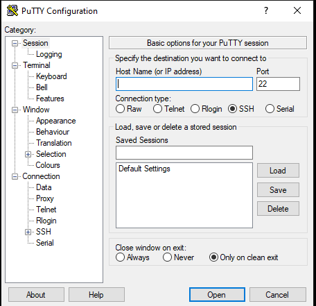
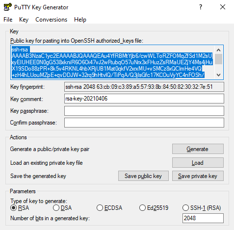
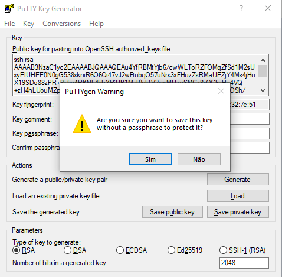
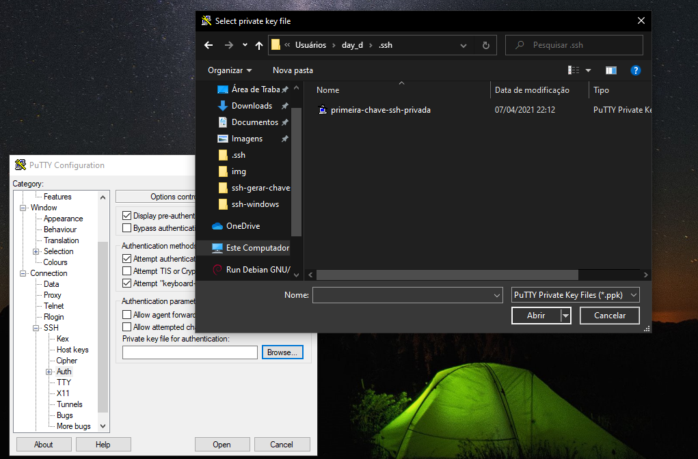
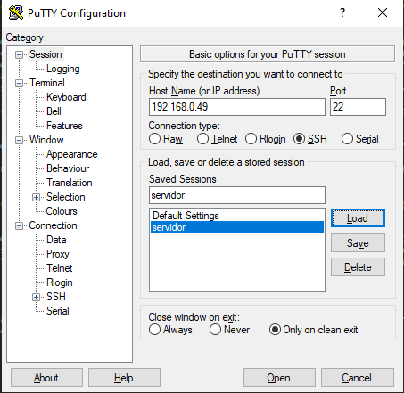
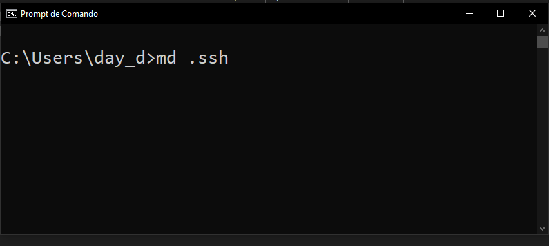
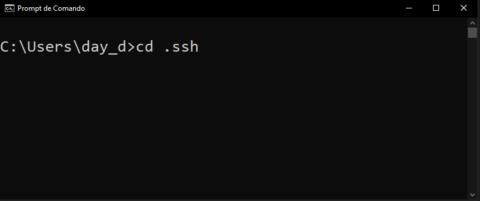
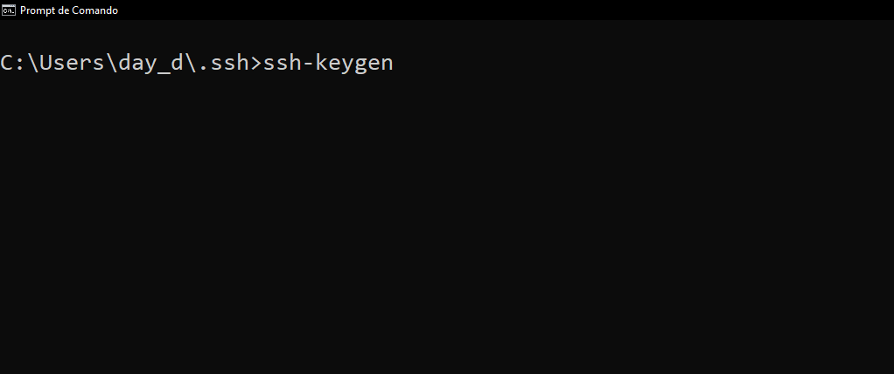
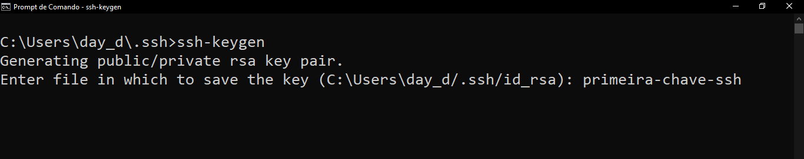
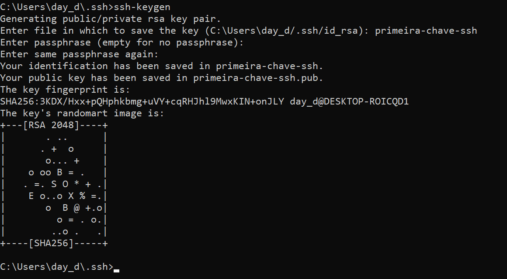

Nesse post irei te auxilixar a como gerar chaves ssh no windows usando o putty e o openssh, caso não saiba como habilitar o openssh no windows 10 clique aqui para ser redirecionado para o procedimento sobre como habilita-lo.
Nesse procedimento abaixo ensino a como gerar as chaves, porem não ensino como enviar a chave publica para o servidor e nem como configurar o serviço para utilizar a autenticação por chaves, pretendo adicionar essas informações em outro tutorial.
Gerando os arquivos de chaves SSH usando putty.
O putty é um software que por meio dele podemos realizar o acesso SSH, caso queira saber mais sobre clique aqui parar acessar o site do putty e tambem para realizar o download do programa.
 interface do putty após instalado, mas fique tranquilo que não vamos usa-lo agora.Não vamos usar o putty agora, pois quando instalamos o putty ele instala um outro programa que utilizaremos para gerar as chaves, o puttygen, você pode localiza-lo por meio do menu iniciar do windows, como na imagem abaixo.

Na imagen abaixo vemos a interface do programa puttygen, clique em generate.
Após isso clique no botão "save public keys" e salve a chave, pois essa é chave publica que vai para o servidor/serviço, após isso clique em "Save private key", ao clicar o programa perguntara se deseja criar uma "palavra/frase passe" para proteção da chave, caso queira clique em não e insira a palavra/frase passe nos campos "key passphrase" e "confirm passphrase", e salve a chave em sua maquina, caso não queire configurar uma "palavra/frase passe" clique em sim na mensagem, e salve a cheve na maquina, pois essa chave com extensão ".ppk" é o arquivo de chave privada que utilizaremos mais tarde para nos conectarmos ao servidor
Pronto já geramos o par de chaves ssh, agora vamos usar o putty para conectar ao servidor.
Abra o putty clique no campo "category" clique em "SSH" > "auth" > "browse" e insira procure pela chave privada, aquela que salvamos com a extensão ".ppk".
Após importar a chave, no campo "category" clique em "session" e adicione o IP do servidor no campo "Host name(or ip address)", utilizaremos a porta padrão que é a 22, e no campo "saved session" coloque um nome para essa sessão e clique em "save" caso deseja salvar essas configurações, após isso só clicar em "open" e após isso terá que abrir um terminal.
Após clicar em "open" o terminal do acesso remoto vai te pedir o nome de usuario na qual você deseja se conectar, digite o nome de usuario, após isso ele vai pedir algumas informações, confirme digitando "yes" e a partir dai você estara conectado ao servidor, como vemos na imagem abaixo.

Obs: nunca logue usando o usuario root, sempre acesse usando um usario comum do servidor/serviço e caso seja necessario use o comando "sudo" para elevar seus priviligios.
Gerando os arquivos de chave SSH por meio do CMD
Abra o CMD e crie uma pasta chamada .ssh para armazenar as chaves, para isso use o comando "md .ssh".
Acesse a pasta com o comando "cd .ssh" para podermos gerar a chaves.
Após acessar a pasta, vamos executar o comando "ssh-keygen" para gerarmos as chaves.
Após executar o comando "ssh-keygen" ele vai pedir o caminho e nome onde salvará as chaves, eu nomeei como "primeira-chave-ssh", porem você tambem pode trocar o diretorio onde vai salvar a chave caso não esteje dentro da pasta .ssh, ou caso queira trocar o local onde você vai salvar os arquivos, digite dessa forma "C:\users\[seu-usuario]\primeira-chave-ssh". para aterar o local onde ficará salvo os arquivos, mas por padrão eu decidi slavar na pasta .ssh.
Após isso, se quiser apenas teclar "enter" para ir pulando até gerar as cahaves, ou se quiser você pode inserir uma "plavara/frase passe" para proteção de sua chave ssh, caso queira digite no campo "Enter passphrase" e "Enter same passphrase again" após isso será gerados 2 arquivos, um deles com a extensão ".pub".
O arquivo com a extensão ".pub" como a propria extensão já diz é o arquivo de chave publica, esse arquivo deve ser mandado para o servidor/serviço, já o outro arquivo ele fica em sua maquina pois vai ser sua chave privada que você utilizará para acessar o servidor.
após isso use o seguinte sintaxe de comando para acessar o servidor desejado com a chave.
ssh -i [arquivo] [usuario]@[ip do servidor]
exemplo: ssh -i primeira-chave-ssh joaozinho@192.1.1.1